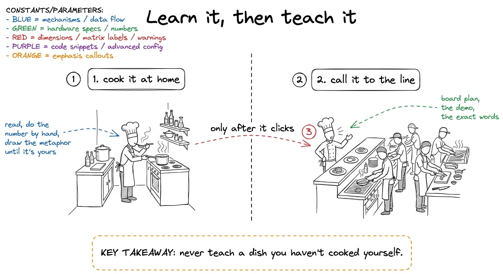
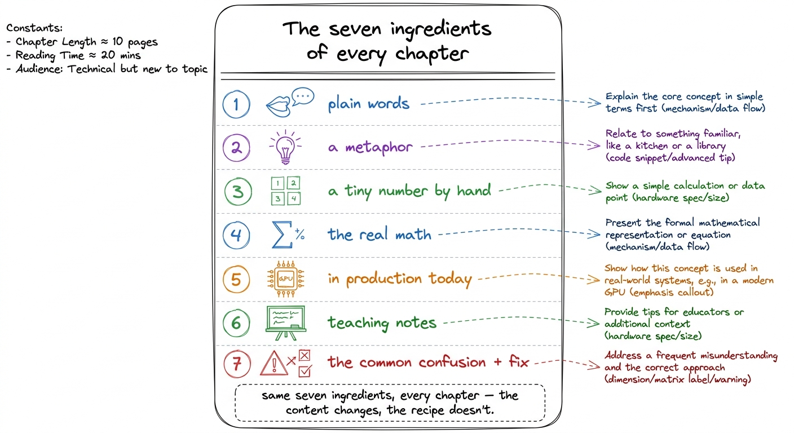
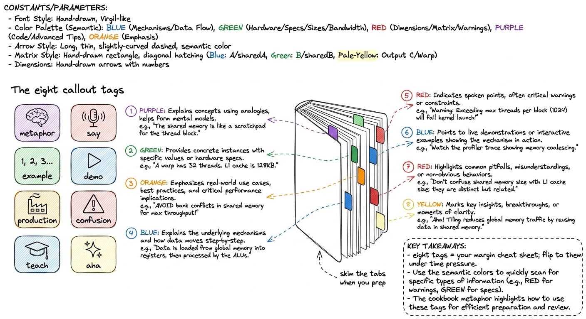
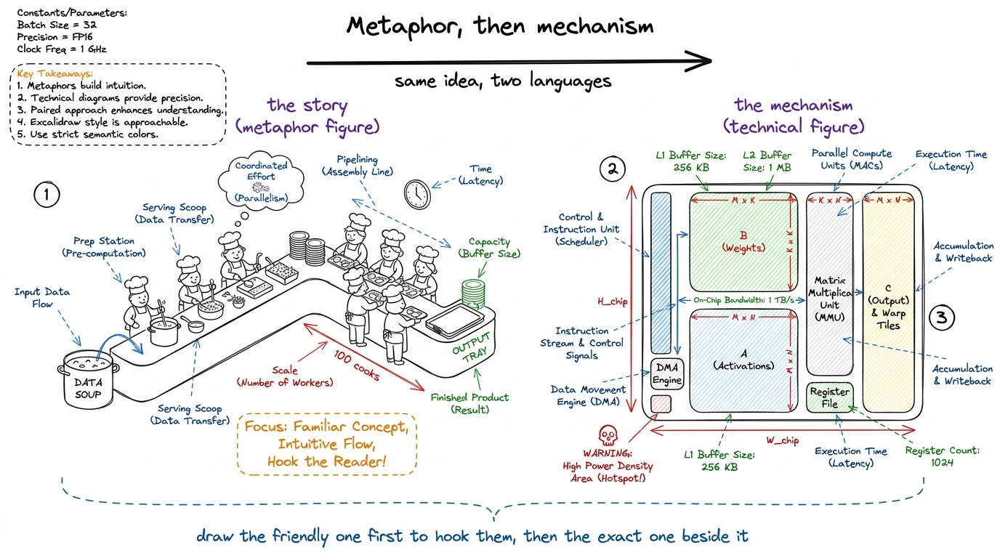
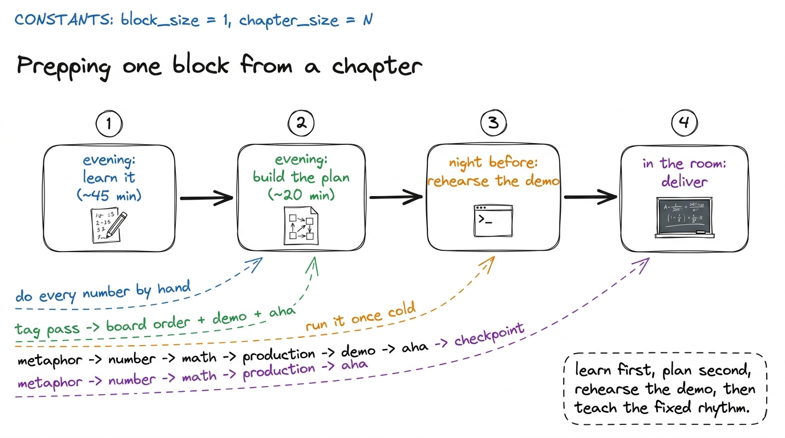
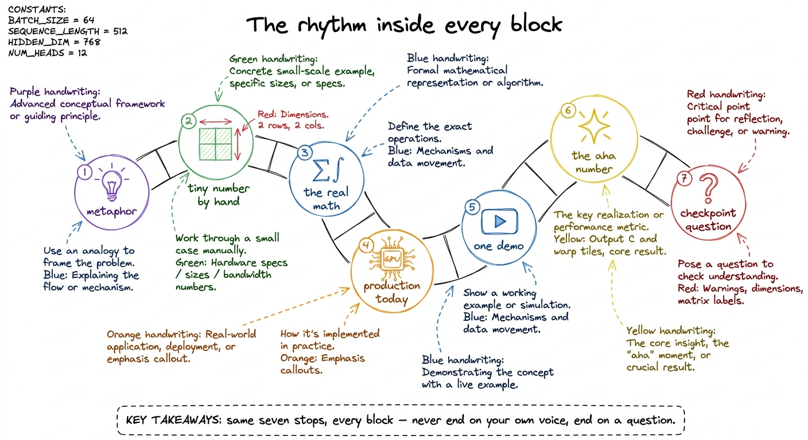

How to use this handbook
By the end of this chapter you can pick up any chapter in this handbook, learn its topic from zero in an afternoon, and walk into a room the next day and teach it well. This chapter is the one that teaches you how to use all the others. Read it once, slowly. Then keep it near you, because everything else in this book is built on the pattern you're about to learn.
Here's the promise of this whole handbook, said plainly. You are Dr. Raj and Shubham — the mentors. You are smart, but you may be starting fresh on GPUs and kernels. That's fine. That's the design. Each chapter takes one idea, hands it to you gently, and then hands you the tools to hand it onward to your students. Learn first. Teach second. Never skip the first.
The one big idea: learn it, THEN teach it
There are two jobs hiding inside every chapter, and you must do them in order.
Job one is to learn. Read the chapter as a student would. Do the tiny number by hand. Draw the metaphor on paper. Don't move on until the idea feels obvious to you. If a sentence needs a re-read, that's a signal — sit with it until it clicks.
Job two is to teach. Only once the idea is yours do you flip into teaching mode: plan the board, pick the demo, rehearse the exact words. The chapter gives you both jobs, clearly labeled, so you never confuse "I sort of get it" with "I can stand up and deliver it."

figure rendering · The core workflow of this handbook: learn the idea alone until it's yoThe seven ingredients — the recipe every chapter follows
Every chapter is built from the same seven parts, always in roughly the same order. Once you see the pattern, you can read any chapter fast, because you know what's coming next. And when you eventually write or adapt a chapter yourself, this is your checklist.
Here are the seven, in plain words:
- Plain words first. The idea explained as if to a smart friend who knows zero about GPUs. Short sentences. Any new word gets defined the moment it appears.
- A metaphor. A picture from real life — a kitchen, a marching band, a post office, a highway. This is the part students remember a week later. The metaphor is the product.
- A tiny concrete number. A 2×2 matrix, a "4 threads vs 32 threads" count — something small enough to do by hand on the board so the abstraction becomes arithmetic.
- The real math, built up gently from that tiny number. Never dropped from the sky. Always grown from the small example the student just watched you do.
- In production, right now. The line to where this lives today — vLLM, FlashAttention, DeepSeek, an H100 or B200 cluster. So you can say "this isn't academic; here's where it earns money."
- Teaching notes. How to actually deliver it: what to draw, in what order, which one demo to run, and the number that makes jaws drop.
- The common confusion + the fix. The exact spot students get lost, and the one sentence that unlocks them.

figure rendering · The fixed recipe behind every chapter: seven ingredients, always the sThe callout blocks — your teaching cheat sheet in the margins
As you read, you'll see colored callout cards scattered through the text. These are not decoration. Each one is a specific kind of help, tagged so you can find it at a glance. Learn the eight tags and you can skim a chapter and pull exactly what you need.
Here is what each tag means:
- metaphor 🧠 — the analogy, the picture you'll redraw on the board.
- example 🔢 — the tiny by-hand number, worked out step by step.
- production 🏭 — where this exact thing runs in the real world today.
- teach 🎓 — how to present it: what to draw, in what order, how to pace.
- say 🎤 — the exact words to speak at the board. Steal these verbatim.
- demo ▶️ — the one live thing to run in front of the room.
- confusion ⚠️ — the misunderstanding students hit, and the fix.
- aha ✨ — the moment or number that makes the whole thing click.

figure rendering · The eight callout tags, drawn as colored cookbook tabs you flip to wheFigures come in two flavors — and often in pairs
You'll notice the figures aren't all the same. That's on purpose. There are two kinds, and you should learn to tell them apart, because you'll redraw them differently on the board.
The first kind is the metaphor illustration — a kitchen line, a cafeteria, a post office, a highway. Warm, friendly, a little charming. This is the picture that carries the feeling of the idea.
The second kind is the technical diagram — matrices drawn as hatched grids, arrows in specific colors, numbered steps, a dashed takeaway box. This carries the mechanism.
Often the book pairs them: a metaphor figure right next to its technical translation. That pairing is a teaching move you should copy. Draw the friendly picture first to hook the room, then draw the precise version right beside it and say "and here's the same thing in real terms."
1 The technical figures use a fixed color grammar you'll see everywhere in this book: blue for mechanism, green for specs, red for dimensions and labels, purple for code, orange for emphasis, yellow for outputs and packaging. You don't have to memorize it to teach — but if you use the same colors consistently on your own whiteboard, students start reading your drawings faster.

figure rendering · The two figure flavors side by side: warm metaphor on the left, precisHow to prep a single session from a chapter
Here is the concrete workflow. Suppose tomorrow you're teaching one 50-minute block, and a chapter in this handbook covers it. This is what you do, start to finish.
The evening before — learn it (about 45 minutes). Read the chapter straight through as a student. Do every by-hand number yourself, on paper, with a pencil. If you can't reproduce the tiny example without peeking, you're not ready — re-read until you can. This is the non-negotiable step. You cannot teach what you can't do.
Still the evening before — build the plan (about 20 minutes). Do the tag pass. Pull the teach and say callouts into a one-page board plan: what you draw first, second, third. Circle the one demo you'll run live. Circle the one aha number — the jaw-dropper — and decide exactly when in the block you'll reveal it. Read the confusion callout twice and memorize the fix, because that moment will come.
In the room — deliver it. Follow the CURRICULUM's block timing: a 3-hour lecture is three 50-minute blocks with breaks. Inside a block, the rhythm is always the same — metaphor on the board, tiny number by hand, grow the real math, drop the production hook, run the one demo, land the aha, end with a checkpoint question. The chapter already ordered these for you. Trust the order.

figure rendering · The end-to-end prep workflow for one lecture block, from learning theThe rhythm inside a block
Zoom in on the in-room part, because it's the same shape every time and worth memorizing. A single teaching block moves through the seven ingredients in order: hook with the metaphor, ground it with the tiny number by hand, grow it into the real math, connect it to production so it feels real, run the one demo, land the aha number, and close with a checkpoint question to confirm the room is with you.

figure rendering · The fixed in-room rhythm of a teaching block: seven stops that climb tThat checkpoint question matters. Never end a block on your own voice. End it on a question you throw back — "so, in one sentence, why must the inner dimensions match?" — and wait. If the answers come back clean, move on. If they're muddy, that's your signal to re-draw the metaphor before the break, not after.
A few honest reminders
Read the two exemplar chapters — Matmul from scratch and CPU vs GPU — before you write or teach anything else. They are the tuning fork. Everything in this handbook is pitched to their voice: warm, unhurried, metaphor-first, always tied to something running in production today.
And keep the hard rule in view: keep it simple. If your own explanation needs a re-read, split it. The whole design bet of this handbook is that if the mentor gets it, the students will too. So the moment you feel fuzzy, don't push past it — that fuzziness is exactly what your students would feel, magnified. Clear it up for yourself first, every time. That's the job.
You can now teach
- The learn-then-teach workflow: do the by-hand number yourself before you ever plan the board — cook the dish at home before you call it to the line.
- The seven ingredients every chapter follows, in order, so you can read any chapter at double speed and know what's coming.
- The eight callout tags and how to do a "tag pass" to pull a lecture's skeleton — say, demo, confusion, aha — in ten minutes.
- The two figure flavors (warm metaphor vs. technical diagram), why they're often paired, and the bridge sentence that connects them.
- The concrete session-prep timeline — learn the night before, build the plan, rehearse the one demo cold, then deliver.
- The in-room rhythm — metaphor, number, math, production, demo, aha, checkpoint — and the mentor mistake of kicking away the ladder you just climbed.